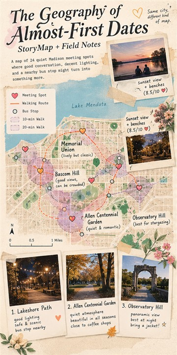

StoryMap + Field Notes
The Geography of Almost-First Dates
Built a narrative map of 24 quiet Madison meeting spots using walkability, sound observations, lighting, and public seating.
Role: Mapping and visual storytelling
View project details
StoryMap + Field Notes | Spring 2026
Role: Mapping and visual storytelling
- Built a narrative map of 24 quiet Madison meeting spots using walkability, sound observations, lighting, and public seating.
- Combined original photographs, hand-drawn annotations, and GIS analysis; mapped where romance meets bus schedules.